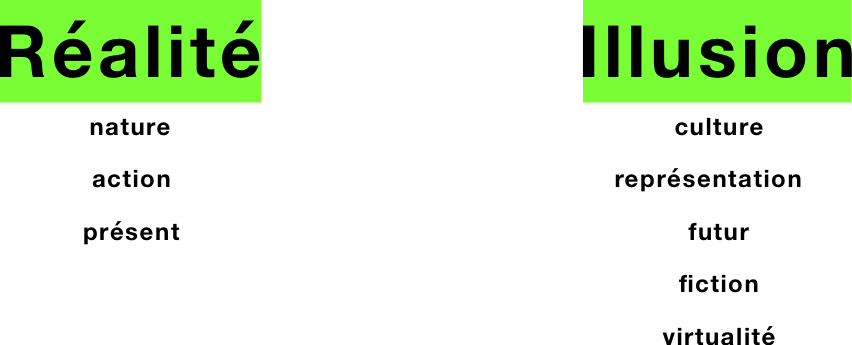
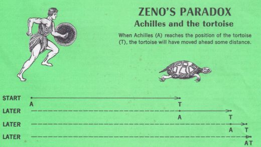
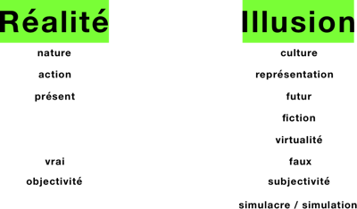

Réalité | Illusion
17.10.17
J’ai souvent l’impression que, quand on le regarde longtemps et de très haut, le monde humain est construit sur des couples de forces opposées, présentes en chaque élément comme autant de dosages minutieux et changeants. Par exemple : inné | acquis. Le premier qui l’a évoqué devant moi était un prof qui affirmait que le monde néolibéral repose sur la croyance enfouie que tout est inné. Depuis, j’ai cru sentir, d’abord chez mes amis, que chacun d’entre nous est plus ou moins biaisé en faveur de l’inné ou de l’acquis. On est tous prêts à reconnaître qu’il y a une certaine part d’inné et une certaine part d’acquis chez l’être humain. Pour certain ce sera 50|50, pour d’autre 70|30. Je pense que quelques rares personnes sont même prêtes à réduire la part de l’inné à presque rien, tandis que l’acquis est presque toujours reconnu. Par contre, l’inné a pour lui ce caractère péremptoire, inflexible, c’est lui qui dit : « si je suis comme ça je n’y peux rien », et il arrive que très peu d’inné l’emporte sur beaucoup d’acquis. On peut d’ailleurs constater que l’inné est globalement mieux partagé : c’est à la fois une idée très vieille et très à la mode - qui est à l’animal. C’est aussi une idée plus simple, plus poétique. Pour autant, le plus souvent, les gens ne sauraient pas quantifier. Précisément parce que le rapport de force est inquantifiable, que la répartition est indémontrable, le débat n’est jamais clos, et rarement explicite. Pourtant, il y a beaucoup de réactions, dans beaucoup d’aspects de la vie, qu’on sent naître de ce fameux biais en faveur de l’un ou de l’autre des deux contraires : face à la responsabilité (naturelle | sociale), face à l’amour (coup de foudre | construction volontaire), face aux choix politiques, etc.
Mais ce n’est pas cette opposition que je veux creuser. Ça doit faire bien trois ans que j’y réfléchis par petites touches : j’en suis venu à penser qu’on ne tranchera jamais, et que d'ailleurs cette ligne de partage sépare grosso modo la gauche de la droite : l’acquis, le social et les excuses à gauche | l’inné, la volonté et la compétition à droite. Je sais que ce bilan est facile, expéditif et probablement erroné, mais pour l’instant ça me va. Je n’ai pas envie pour l’instant de pousser plus loin cette question insoluble – même si c’est précisément son insolvabilité qui fait d’elle une force motrice. Je ne la trouve pas urgente, et même si elle est actuelle, elle ne fait pas l’actualité.
Une autre opposition qui me travaille inconsciemment, depuis longtemps, depuis que je distinguais nature | culture dans mes recherches d’arts plastiques au lycée, et qui se pose à moi de façon plus urgente ces derniers temps, c’est l’opposition réalité | illusion. J’ai l’impression que cette ligne de partage-ci remonte très loin dans l’Histoire. L’intuition qu’on la trouve déjà dans les textes bouddhistes, sans avoir encore pris le temps de les lire. J’imagine, par de vagues réminiscences scolaires, qu’elle est présente chez les Grecs. Je me souviens d’un débat sur le danger de la fiction à l’époque de Rocambole – débat presque éteint aujourd’hui, qui mériterait d’être rallumé au contact des séries. Je crois savoir que Proust a posé une pierre à l’édifice avec son œuvre, plutôt en faveur de l’illusion, d’après ce que j’ai cru comprendre. Je peux aussi penser à Matrix, au choix de la pilule bleue ou de la pilule rouge. À Guy Debord, évidemment, et sa vie de lutte contre la Société du Spectacle.
Au sein de toutes ces philosophies et de toutes ces œuvres, je peux voir courir la faille réalité | illusion. Et surtout, j’en pressens l’urgence (il ne faut pas être devin) à l’aube de la réalité virtuelle et des vies algorithmées.
Je me propose donc de faire de ces deux oppositions un filet, réalité | illusion, et de le tendre au vent jusqu’en juin 2018. On verra bien ce que je pêche.
18.10.17
La question qui se pose : l'un ou l'autre, réalité ou illusion, a-t-il plus de valeur ou plus de poids ? Faut-il donner la priorité à l'un des deux ? Faut-il fuir la fuite de la réalité contenue dans l'illusion ? Au contraire, l'illusion est-elle le propre de la vie humaine ? Y a-t-il même une différence entre réalité et illusion ?
Au passage, d'autres sources me sont venues pour enrichir le corpus : les Illusions perdues de Balzac, qui déjà dénonce la fumée publicitaire. Les réalités imaginaires de Harari, dans Sapiens, formes primitives et essentielles de la collaboration humaine. Certains épisodes de Black Mirror, notamment "15 millions de mérites", "Be Right Back", "Playtest" et "San Jupitero", qui présentent tous des dystopies avec une part d'illusion.
En voulant commencer à jeter spontanément sur le "papier" - de mon logiciel de graphisme - le début d'une carte conceptuelle, je me rends compte que j'écris "réalité" à gauche, "illusion" à droite, et que je n'envisage pas de faire l'inverse. Je crois même que c'est ce que j'ai fait en première intention, mais ça n'allait pas, et j'ai échangé. Je me souviens d'un vieux manuel de PNL (programmation neuro-linguistique, en général résumé - surtout par les dragueurs de base - à la façon dont votre corps vous trahit) où il était écrit que regarder à gauche signifierait penser au passé, tandis que regarder à droite signifierait se projeter vers le futur...

19.10.17
Je viens de revoir avec une amie l'épisode 4 de la troisième saison de Black Mirror, où il est laissé le choix aux individus de rester dans un paradis virtuel et nostalgique s'ils ne veulent pas mourir. Évidemment, à la fin, elle m'a demandé ce que je choisirais. J'ai répondu que là où les mecs sont très forts, c'est qu'ils proposent "une version d'essai", exactement comme pour n'importe quel logiciel, et que c'est sûrement ça qui fait la différence : si on veut refuser, il faut refuser par principe, mais si on se laisse tenter par la version d'essai il y a de bonnes chances pour qu'on veuille la prolonger indéfiniment.
Et là elle a dit quelque chose de très intéressant, quelque chose comme : "Il y a un truc bizarre dans cette série, j'ai l'impression qu'ils partent du principe, dans chaque épisode, que l'être humain n'existe que par son esprit". Je n'ai pas tout de suite compris ce qu'elle voulait dire. Mais c'est vrai que l'épisode se termine sur une vision de tous ces esprits immortels qui palpitent dans des mini-puces fixées à des murs de serveurs informatiques. Ce qui suppose une copie informatique du contenu du cerveau, mais aussi du transfert, on ne sait trop comment, de ce qui correspond à la conscience. Je lui ai dit qu'il était plus concevable d'imaginer un cerveau qu'on continuerait d'alimenter à l'infini et qu'on ferait vivre dans une réalité augmentée rendue absolument crédible grâce à des informations envoyées dans le cerveau ou dans les nerfs (je me suis bien rendu compte en parlant que je n'y connais rien), un peu comme les drogues qui font apparaître des hallucinations et des sensations en créant des connexions involontaires entre les synapses. Elle ne pense pas qu'on arrive un jour à abolir la frontière. Elle n'arrêtait pas de répéter que ce ne serait pas la (vraie) vie. Qu'on a la preuve qu'on existe parce que les autres sont là pour témoigner de notre existence, que si elle me demande si elle existe je suis en mesure de lui répondre oui. J'ai répondu que si j'étais le développeur d'une intelligence artificielle, le premier cas d'erreur que je penserais à traiter serait justement ce moment où la personne en immersion demande à l'intelligence de lui prouver son existence, et que je lui ferait même montrer qu'elle est capable de se questionner sur la définition même d'existence, histoire d'être encore plus convaincante.
On s'est aussi demandé si les images offrent une illusion de plus en plus convaincante, et si la frontière avec le réel est effectivement de plus en plus poreuse. Elle est convaincue que la confusion était la même pour des gens qui ne connaissaient que la peinture en perspective, parce qu'il n'ont connu que ça, que pour des gens qui peuvent s'immerger dans l'univers d'une série pendant plusieurs dizaines d'heures. Ce qui signifierait pour elle que l'être humain sera toujours capable de faire la distinction, quelles que soient les avancées techniques. Je ne peux pas m'empêcher de penser à l'inverse que la frontière est de plus en plus mince, et que chaque nouveau progrès dans l'image induit un nouveau seuil dans la perte de repères.
Elle n'arrêtait pas de répéter que ce ne serait jamais possible parce qu'on aurait toujours besoin d'aller aux toilettes et de manger, même après que je lui aie dit qu'on pouvait complètement imaginer qu'on vive sous perfusion avec une poche à caca pendant que notre cerveau ganbaderait dans un paradis artificiel, un peu comme dans Matrix. Elle m'a dit qu'elle n'avait jamais fini ce film parce qu'elle l'avait trouvé trop con. Et elle a fini par demander à ce qu'on change de sujet, parce que ça la déprimait : la perspective de vivre dans une réalité virtuelle ne peut signifier pour elle qu'un appauvrissement, et même pire, une forme honteuse de vie, une insulte, voire la négation de la vie, enfin rien de souhaitable quoi.
Elle m'a aussi parlé d'un film qu'il va falloir que je voie : Le monde sur le fil, de Fassbinder.
20.10.17
Du coup, ce soir on a regardé la première partie du Monde sur le fil (Welt am Draht) de Fassbinder (1973), adapté d'un roman de Daniel F. Galouye, Simulacron 3 (1969) - au passage, je découvre qu'il se rattache à la science-fiction des simulacres, qui désigne précisément des scénarios où l'homme tente de simuler la réalité (la société ou l'humain), et à laquelle se rattachent de nombreux romans de Philip K. Dick, mais aussi, évidemment, Matrix. Sans parler de la filiation directe avec Westworld.
Dans la première partie du film que j'ai vue, des scientifiques recréent des "unités" humaines grâce à des ordinateurs, donnant ainsi naissance à un simulacre de société algorithmée. Pour l'instant, deux menaces principales : l'intérêt de l'industrie pour le potentiel d'anticipation d'une telle matrice, et le risque de confusion, pour les scientifiques, entre la réalité et sa simulation ("Réfléchis : chaque jour, tu règnes comme Dieu sur un monde miniature que tu as contribué à créer, et que tu confonds de plus en plus avec le monde réel", 1:10:45) - je viens juste de me rendre compte à quel point c'est intéressant de noter qu'on peut dire aussi bien vrai monde que monde réel, comme si la vérité se trouvait forcément dans la réalité, pas dans l'illusion.

Il y est aussi question d'un des paradoxes de Zénon : le paradoxe d'Achille et la tortue. Ça me disait vaguement quelque chose ; je me le suis fait réexpliquer : Achille aura beau être plus rapide que la tortue, s'il la laisse partir avec de l'avance, il ne la rattrapera jamais, parce qu'à chaque fois qu'il parcourera la distance qui le sépare de la tortue celle-ci aura progressé, créant une nouvelle distance... et ainsi de suite à l'infini. Je ne voyais pas le lien avec la réalité virtuelle, mais mon amie, non seulement plus cultivée mais aussi plus vive que moi, l'avais trouvé : il est question de savoir si deux réalités différentes peuvent se rejoindre, ou plutôt si celle qui a du retard sur l'autre (la simulation) peut rattraper la première (ses créateurs), ce qui n'est pas sans évoquer le concept de singularité, inventé par Raymond Kurzweil, qui est ce fameux point de rupture hypothétique où l'intelligence artificielle dépassera l'intelligence humaine et où les choses risquent de s'emballer à la vitesse de la puissance de calcul des machines... Ce qu'on retrouve dans Westworld, où la singularité s'accompagne d'un éveil des robots à la conscience. Tellement de choses qu'il me faut approfondir !

J'en profite pour actualiser ma carte conceptuelle.
